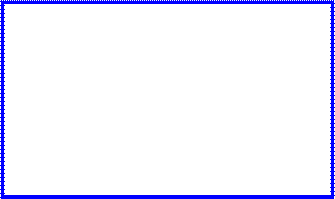
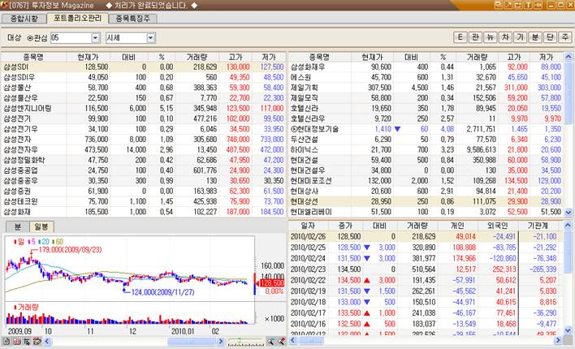

(0767)투자정보 Magazine
1. 개요
복잡한 여러 가지 정보를 담기보다는 잡지를 넘기듯이 장흐름을 살펴볼 수 있는 구조의 화면입니다. 전체 업종 및 뉴스발생부터 관심종목의 뉴스/리포트 발생내역 조회, 장중 특징주로 이어지는 흐름을 따라가다보면 어렵지 않게 오늘의 장흐름을 파악하실 수 있습니다.
2. 세부내용
<종합시황>

|
|
|
|
장중 흐름을 한눈에 볼 수 있는 지수와 업종을 구성하는 종목들의 상승/하락여부, 주요 투자자들의 매매동향, 장중 발생 뉴스를 확인할 수 있는 종합시황 화면입니다.
1. 한눈에 보는 지수
코스피, 코스닥, 최근월 선물의 차트를 통해 장 시작부터 마감 때까지의 전체 흐름을 한눈에 보실 수 있습니다.
2. 업종별 등락현황
코스피/코스닥/KRX/테마에 속하는 종목 중 상승(분홍)/보합(초록)/하락(파란)색으로 표시해 가로막대차트로 제공합니다. 이 가로막대를 더블클릭하게 되면 해당 업종에 속하는 세부 구성종목들의 시세 확인이 가능합니다.
|
|
또한  버튼을 누르면 다시 가로막대 차트 화면으로 돌아갑니다.
버튼을 누르면 다시 가로막대 차트 화면으로 돌아갑니다.
3. 한눈에 보는 매매동향
장 중 주요 투자자들의 매매동향과 프로그램매매동향을 제공합니다.
 클릭 시, 시장별 투자자와 프로그램매매 차트를 확인할 수 있습니다.
클릭 시, 시장별 투자자와 프로그램매매 차트를 확인할 수 있습니다.
4. 분석뉴스
각 제공처별로 뉴스를 제공하며 와 같이 종목코드란에 특정 종목을 입력하면 특정 종목에 대한 뉴스만 선택이 가능합니다.
또한 와 같이 선택하면 관심에 등록된 그룹 중 선택하여 해당 그룹에 속한 종목들에 뉴스가 발생했을 경우, 그 종목들에 대한 뉴스만 제공합니다. 다만, 이 항목 선택 시에는 조회성으로는 제공하지 않고 실시간으로 뉴스가 발생했을 경우에만 해당 뉴스가 제공됩니다.
<포트폴리오관리>
관심종목에 발생된 뉴스, 지분변동현황, 리포트발생현황 등을 신호로 보거나 각 증권사들에서 발표한 투자의견에 따른 컨센서스 현황을 볼 수 있는 화면으로 현재 보유 중인 포트폴리오에 대한 시장의 분석결과 확인이 가능합니다.
|
|
|

1. 관심종목의 펀더멘털/알림/시세 현황
- 대상: 관심종목의 각 그룹을 선택할 수 있습니다.
- 구분: 펀더멘털/알림/시세로 구분되어 있습니다
- 연결버튼: 각 종목을 클릭 시, ELW 기초자산일 경우에는 E 버튼이 나타나며 그렇지 않을 경우에는 버튼만 나타납니다.
각 버튼은 아래와 같이 작동합니다.
- (0264)ELW조건검색화면에 기초자산 연동하여 열림
- 관심종목등록
- (0700)뉴스종합화면에 해당 종목연동하여 열림
- (0301)주식차트 종목연동하여 열림
- (0750)기업분석 화면에 종목연동하여 열림
- (0761)한경컨센서스 화면에 종목연동하여 열림
- (1121)시간외주문종합 화면에 종목연동하여 열림
- (1001)주식파워주문 화면에 종목연동하여 열림
2. 분/일봉 차트
상단에 발생한 내역을 클릭 시, 해당 종목의 분차트와 일봉차트를 제공합니다.
3. 요약정보
상단에 발생한 내역을 클릭 시, 해당 요약 내용이 뜨고 버튼을 누르면 상세 내용을 확인할 수 있는 페이지가 열립니다.
* 펀더멘털

각 증권사들이 발표한 리포트들에 있는 투자의견을 바탕으로 형성된 컨센서스 데이터를 제공합니다. 최근 6개월간 증권사에서 발표된 수치, 종합의견, 예상EPS, 목표주가 컨센서스를 제공합니다.
* 알림
선택한 관심그룹에 있는 종목에서 뉴스/지분변화/리포트발생/분석리포트 발생 시, 해당 신호를  와 같이 표시하여 알려줍니다.
와 같이 표시하여 알려줍니다.
: 뉴스의 경우 6시간 이내에 발생된 종목, 리포트/분석의 경우 24시간 내에 발생된 종목에 표시
 : 리포트는 컨센서스 대비 일정 비율 밖이면 표시
: 리포트는 컨센서스 대비 일정 비율 밖이면 표시
- 뉴스: 신호 클릭 시에는 해당 종목의 뉴스를 우측 하단에서 조회할 수 있습니다.
- 지분: 신호 클릭 시에는 해당 종목의 지분변화 발생 내역을 우측 하단에서 조회할 수 있으며  버튼을 누르면 상세 내용을 확인할 수 있는 페이지가 열립니다.
버튼을 누르면 상세 내용을 확인할 수 있는 페이지가 열립니다.
- 리포트: 신호 클릭 시에는 해당 종목의 리포트 발생 내역을 우측 하단에서 조회할 수 있으며  버튼을 누르면 상세 내용을 확인할 수 있는 페이지가 열립니다.
버튼을 누르면 상세 내용을 확인할 수 있는 페이지가 열립니다.
- 분석: 신호 클릭 시에는 해당 종목의 분석리포트 발생 내역을 우측 하단에서 조회할 수 있으며 버튼을 누르면 상세 내용을 확인할 수 있는 페이지가 열립니다.

* 시세
선택한 관심그룹에 속한 종목들의 현재가/대비/%/거래량/고가/저가 데이터를 제공하며 개별종목 클릭 시, 우측 하단에서는 각 투자자들의 일별 순매수 현황을 제공합니다.(당사 0192 화면)

<종목특징주>
장중 종목별로 특이사항 및 리포트 발생, 지분변동 사항을 확인할 수 있는 화면으로 장중특징주/리포트특징주/지분특징주로 나뉘어 있습니다.
1. 장중특징주
특이사항이 발생한 종목의 경우 해당 화면에 실시간으로 해당 내용이 들어오며 더블클릭하면 상세내역을 볼 수 있는 화면이 뜹니다.
2. 리포트특징주
오늘의 리포트 동향을 비롯해 목표주가가 변경되거나 투자의견이 변경된 종목들에 대한 전체 현황을 보여주며 종목명을 클릭하면 해당 상세내용을 확인할 수 있습니다.
3. 지분특징주
외국인/기관/내부자의 지분변화가 있는 종목들의 현황을 제공하며 종목명을 클릭하면 해당 상세내용을 확인할 수 있습니다.